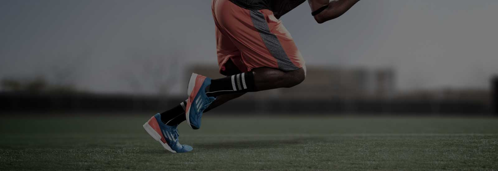

Becoming a member provides you with the best opportunity to secure tickets to watch our
team in action, so don't miss out on this opportunity. Every game this season has sold
out on the first day of sales for members, meaning there is no better way to give
yourself a chance of purchasing tickets. After Friday 3 March, you’ll not be able to buy a membership.
En savoir plus
Les sport extrêmes
Pas question de trembler avant de s'élancer dans le vide depuis une plateforme de près de 30 mètres de haut avec pour simple accroche un élastique, ou d'avoir le vertige lorsqu'on est funambule.
ACCEDER AU BLOG

Une envie de tester le
RUNNING
50% Offert
J'EN PROFITE

Sur terre,dans les airs ou sur l'eau,
les sports extrêmes ont toujours ébahis les plus réfrénés et tentés les plus braves.
Our Soccer Club anticipates a passionate atmosphere for tonight’s game against
Tottenham and we ask for the support to remain respectful. Fans attending
are also advised to arrive early to ensure they are able to enter for
kick-off at 8pm. Turnstiles will open at approximately 6pm and all supporters are encouraged to be there in time.
En savoir plus
En savoir plus

L’exploit du mois,
Il y a des performances qu’il ne faut pas rater, que l’on peut revoir des centaines
de fois, réalisé en août dernier dans un lieu splendide, l’énorme exploit
que vous allez voir ici, fait partie de ceux-là.
Un casting de rêve pour votre plus grand plaisir, le « kid » (Pablo Signoret), le « bandit » (Rafael Bridi) et le « pote qui doit tout porter » (Guilherme Coury).
Mais finalement quel est cet exploit, ce record, dont nous vous parlons depuis le début ? Traverser une slackline de 200 mètres, tendue au-dessus du vide, à 3000 mètres d’altitude. Autant dire que vous allez en prendre plein les yeux voire en reprendre pour ceux d’entre vous qui ont déjà eu le plaisir de voir cette vidéo..
Mais finalement quel est cet exploit, ce record, dont nous vous parlons depuis le début ? Traverser une slackline de 200 mètres, tendue au-dessus du vide, à 3000 mètres d’altitude. Autant dire que vous allez en prendre plein les yeux voire en reprendre pour ceux d’entre vous qui ont déjà eu le plaisir de voir cette vidéo..
Cet endroit est unique, perdu dans les montagnes. L’aiguille Dibona n’est pas comme
les autres sommets français : c’est très fin, très raide et c’est immense. Demandez
à Pablo et Rafael et ils vous diront une chose : d’y aller. » …. « Se rendre sur
ce sommet était déjà une aventure en soi » ….. « cette fois, le fait de traverser
la slackline n’était pas le plus compliqué : les gars ont dû marcher pendant cinq
jours pour atteindre le spot, tout en portant des sacs de 25 à 40 kilos. » Pierre Chauffour, réalisateur.